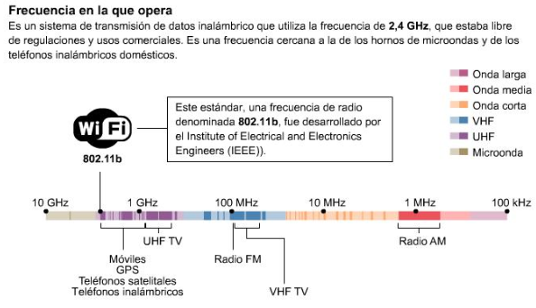

¿Cuáles son las formas de conectarme sin cable a Internet? Las mostramos a continuación.
- Wifi: Está formada por un conjunto de estándares para redes inalámbricas, las cuales se basan en las especificaciones IEEE 802.11.Wifi fue creada para darle uso en redes locales inalámbricas, pero en la actualidad con frecuencia es utilizada también para acceder a Internet. Wifi es una marca de la Wifi Alliance (antes denominada la Wireless Ethernet Compatibility Alliance).

- Bluetooth: Es una tecnología la cual nos permite un rango de sólo 9 metros y una conexión más lenta de 720-1,000 Kbps, por lo que se considera más adecuada para casas y pequeñas oficinas. Conectarse a Internet a través de teléfonos móviles y PDAs también puede ser una opción, aunque las pequeñas pantallas de las PDAs algunas veces dificultan la visión de las pantallas web. Por lo que es mejor usar estos accesos a Internet para rápidas verificaciones sobre el clima, noticias, tráfico, deportes y otras piezas digeribles de contenido de Internet.
- Wimax: Es lo que podemos llamar la evolución de la tecnología Wifi, esta dispone de una cobertura máxima de 50 kilómetros y una velocidad de hasta 70 megabits por segundo, con lo cual suele ser utilizada para cubrir áreas metropolitanas o zonas de difícil acceso para las redes convencionales.
- Vía satélite: En este tipo de conexión utilizamos la combinación de satélite y teléfono. Es necesario disponer de una conexión de cualquier tipo de los anteriormente señalados y aparte también es necesario una antena parabólica, un software adecuado y la suscripción a un proveedor de satélite. Este sistema es el que se utiliza como acceso en aquellos lugares donde no llega el cable o la telefonía, como zonas rurales o alejadas.
- GPRS: Es la tecnología que nos va a permitir trasmitir datos a alta velocidad a través de redes inalámbricas, llegando a conseguir servicios como por ejemplo acceso a Internet y correo electrónico. El GPRS sirve de complemento al GSM, ya que se añade un sistema basado en la transmisión de paquetes de datos a la red ya existente.
- 5G: Los servicios ligados con la quinta generación nos permiten la posibilidad de transferir tanto voz y datos (una llamada telefónica o una videollamada) como datos no-voz (como la descarga de programas, intercambio de email, y mensajería instantánea). A pesar de que esta tecnología estaba dirigida a la telefonía móvil, desde hace unos años las operadoras de telefonía móvil ofrecen servicios exclusivos de conexión a Internet mediante módem usb, sin necesidad de adquirir un teléfono móvil, por lo que cualquier computadora puede disponer de acceso a Internet. Ancho de banda típico: 250-4,000 Mpbs